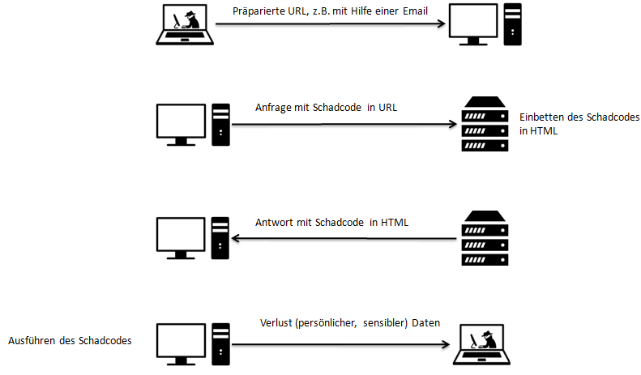
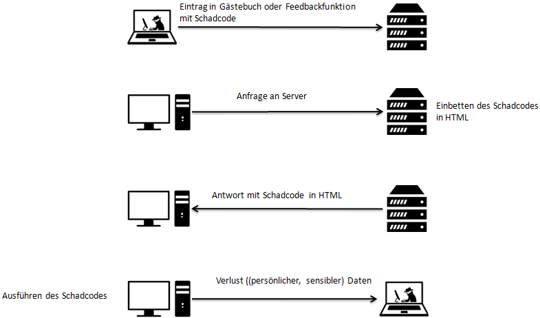
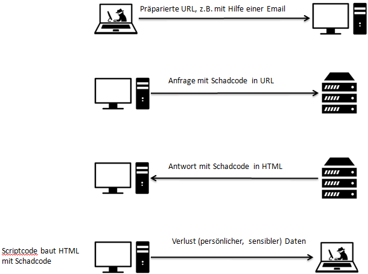

XSS-Demo
XSS
Mit Cross-Site Scripting (XSS) wird das Ausnutzen einer Sicherheitslücke in Webanwendungen bezeichnet,
indem ein Angreifer Webseiten mit clientseitigen Skripten infiziert, die von anderen Nutzern aufgerufen werden.
Ca. 80% der ausgenutzten Sicherheitslücken in Webanwendungen gehen auf Cross-Site Scripting zurück.
Die Auswirkungen von XSS können zwischen einem kleinen Ärgernis und einem erheblichen Sicherheitsrisiko liegen,
je nach Sensibilität der Daten.
Reflected XSS (non-persistent)

Stored XSS (persistend)

Local XSS (DOM Injection)

Demo
Ein kleines XSS-Demo ist schnell erstellt. Dazu wird lediglich ein Browser und XAMP (oder ähnliches) benötigt.
Zunächst eine HTML-Datei erstellen, die ein Eingabefeld enthält. Das könnte ungefähr so aussehen:
<html>
<head>
<center>
<h1>XSS-Demo</h1>
</center>
</head>
<body>
<form method="POST" action="text.php">
<center>
<label for="text">Suchbegriff: </label>
<input name="text">
<button type="submit">suchen</button>
</center>
</form>
</body>
</html>
Jetzt fehlt noch eine PHP-Datei, die diese Anfrage entgegennimmt:
<?php
if(isset($_POST["text"]))
{
$text = $_POST["text"];
echo "Ihr Suchbegriff war: '$text'";
}
?>
Gibt man nun in das Textfeld z.B. <script>alert("XSS!!!")<script> ein, hat man ein kleines XSS-Demo ausgeführt.